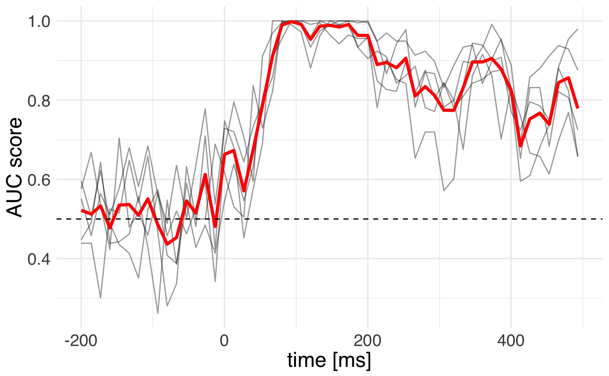

vignettes/plot_machine_learning_evoked.Rmd
plot_machine_learning_evoked.RmdIn this example we are going to use the machine learning functionality of MNE-Python and scikit-learn to analyze evoked responses.
## ── Attaching packages ────────────────────────────────────────────────────────── tidyverse 1.2.1 ──## ✔ ggplot2 3.1.1 ✔ purrr 0.3.2
## ✔ tibble 2.1.1 ✔ dplyr 0.8.0.1
## ✔ tidyr 0.8.3 ✔ stringr 1.4.0
## ✔ readr 1.3.1 ✔ forcats 0.4.0## ── Conflicts ───────────────────────────────────────────────────────────── tidyverse_conflicts() ──
## ✖ dplyr::filter() masks stats::filter()
## ✖ dplyr::lag() masks stats::lag()## Importing MNE version=0.18.dev0, path='/Users/dengeman/github/mne-python/mne'Let’s read in the raw data.
data_path <- mne$datasets$sample$data_path()
subject <- "sample"
raw_fname <- paste(data_path,
'MEG',
subject,
'sample_audvis_filt-0-40_raw.fif',
sep = '/')Let’s read in and preprocess the data.
raw <- mne$io$read_raw_fif(raw_fname, preload = T)
# Band pass filtering signalss
raw$filter(1, 30, fir_design = "firwin")## <Raw | sample_audvis_filt-0-40_raw.fif, n_channels x n_times : 376 x 41700 (277.7 sec), ~123.3 MB, data loaded>events <- mne$find_events(raw)
storage.mode(events) <- "integer" # R gets the events as floats.
tmin <- -0.2
tmax <- 0.5
baseline <- reticulate::tuple(NULL, 0)
reject <- list(mag = 5e-12)
event_id <- list("aud/l" = 1L, "vis/l" = 3L)
picks <- mne$pick_types(raw$info, meg = T, exclude = 'bads') %>%
as.integer() # make sure it's int
decim = 2L # use every 2nd time sample
epochs <- mne$Epochs(raw = raw, events = events,
event_id = event_id, tmin = tmin,
tmax = tmax, picks = picks, proj = T,
baseline = baseline, reject = NULL,
decim = decim, preload = T)We can set up the model. For this we will need to do a few imports from scikit-learn.
preproc <- reticulate::import("sklearn.preprocessing")
pipeline <- reticulate::import("sklearn.pipeline")
linear_model <- reticulate::import("sklearn.linear_model")
clf <- pipeline$make_pipeline(
preproc$StandardScaler(),
linear_model$LogisticRegression(solver = "lbfgs"))
time_decod <- mne$decoding$SlidingEstimator(
clf, scoring = "roc_auc", n_jobs = 1L)
# MEG signals: n_epochs, n_meg_channels, n_times
X <- epochs$get_data()
# R vs Python indexing!
y <- epochs$events[, 2 + 1]
# recode and make sure it's an int.
y <- ifelse(y == 1, 0, 3) %>% as.integer()
scores <- mne$decoding$cross_val_multiscore(time_decod, X, y,
cv = 5L, n_jobs = 1L)Time for action with R to plot the outputs!
# first we add the time info after rounding
colnames(scores) <- round(epochs$times * 1e3)
# we create a long table
scores_df <- scores %>%
as.data.frame() %>%
gather(key = "time", value = "score")
# and add the info about the folds.
scores_df$fold <- sprintf("fold %s", 1:5) # R expands it magically ...
ggplot(
data = scores_df,
mapping = aes(x = as.numeric(time), y = score)) +
geom_line(mapping = aes(group = fold), alpha = 0.4) +
stat_summary(fun.y= "mean", geom = "smooth", size = 1.3,
color = "red") +
geom_hline(yintercept = 0.5, color = "black", linetype="dashed") +
theme_minimal() +
theme(text = element_text(size = 18, family = "Helvetica")) +
labs(y = "AUC score", x = "time [ms]")
We can see that the cross-validation uncertainty is lowest around 150 milliseconds.